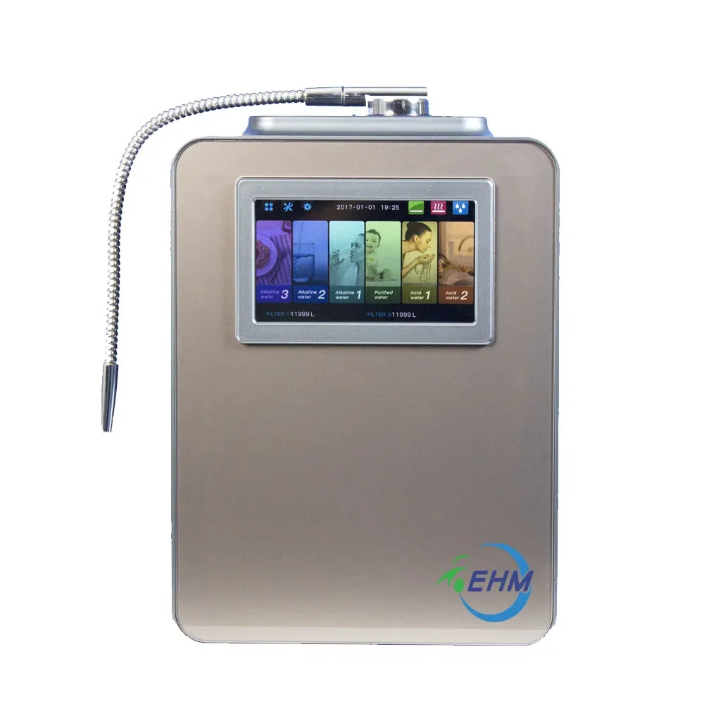
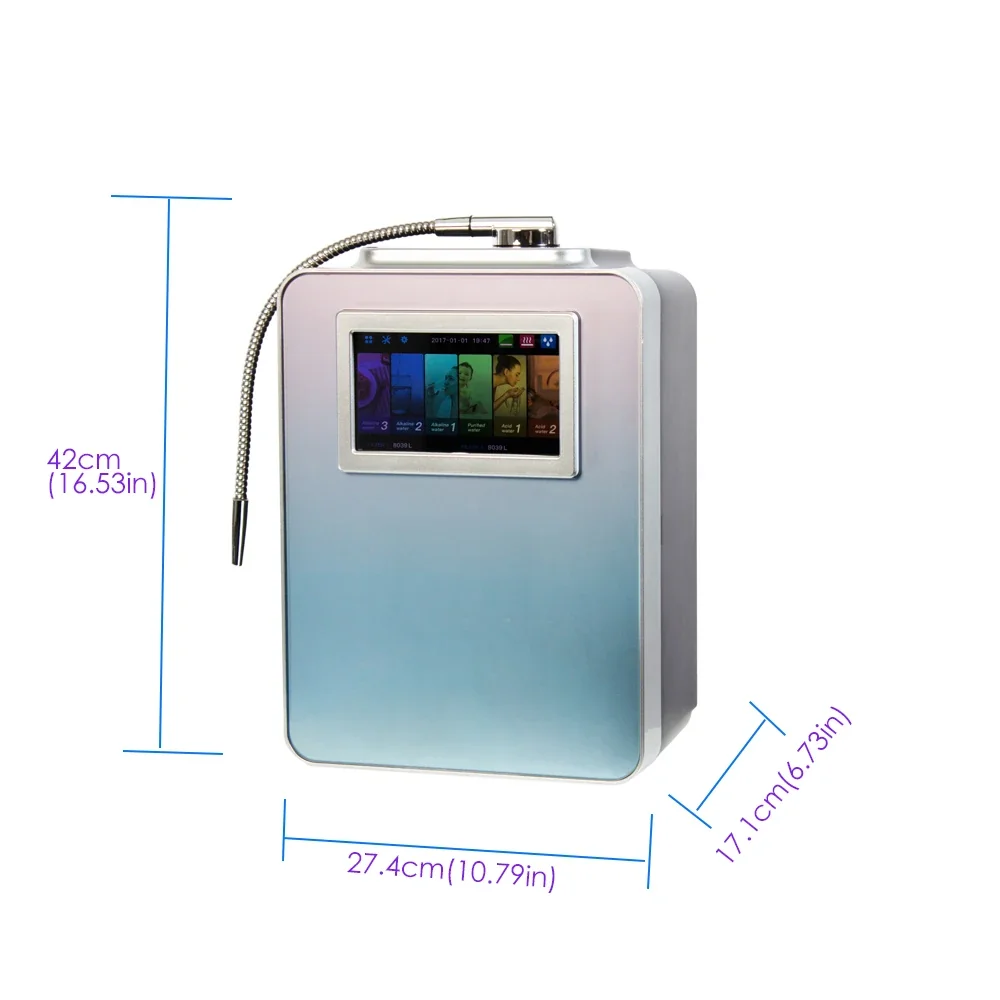
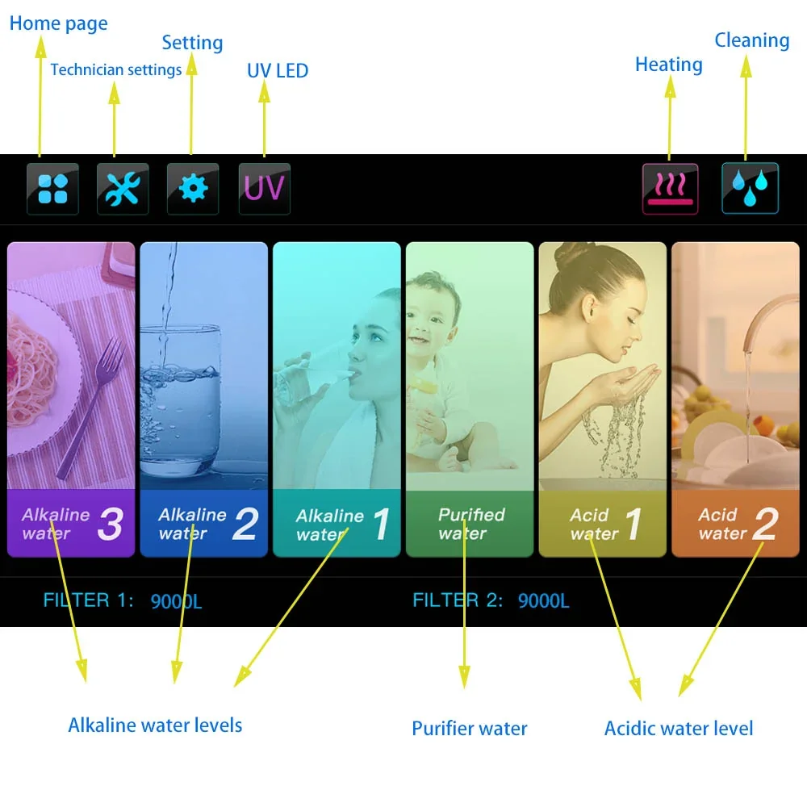
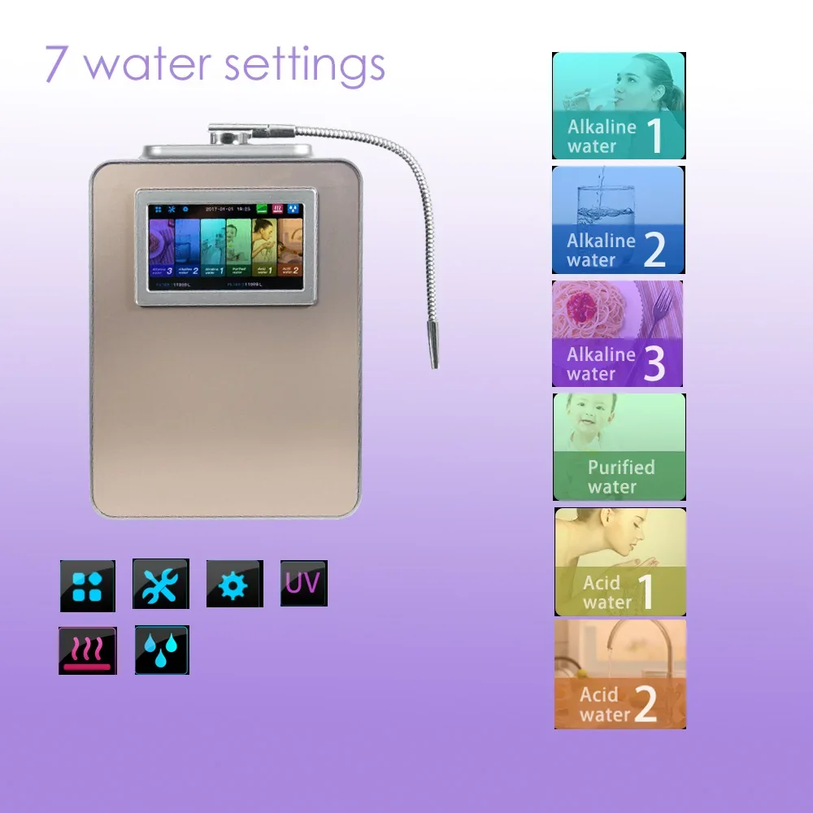
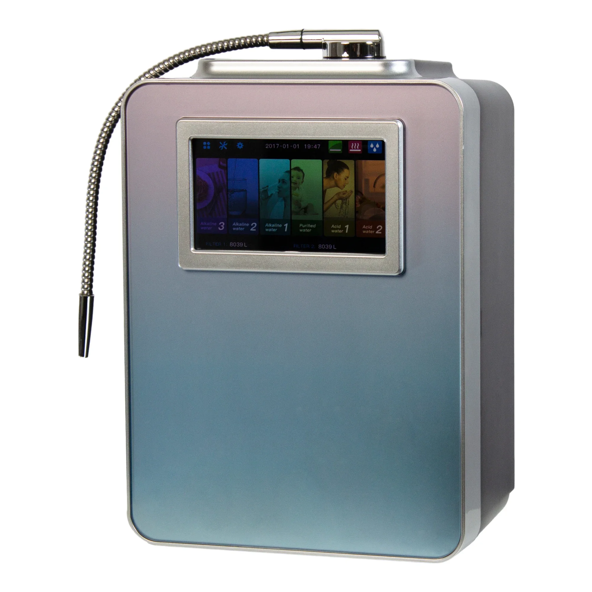
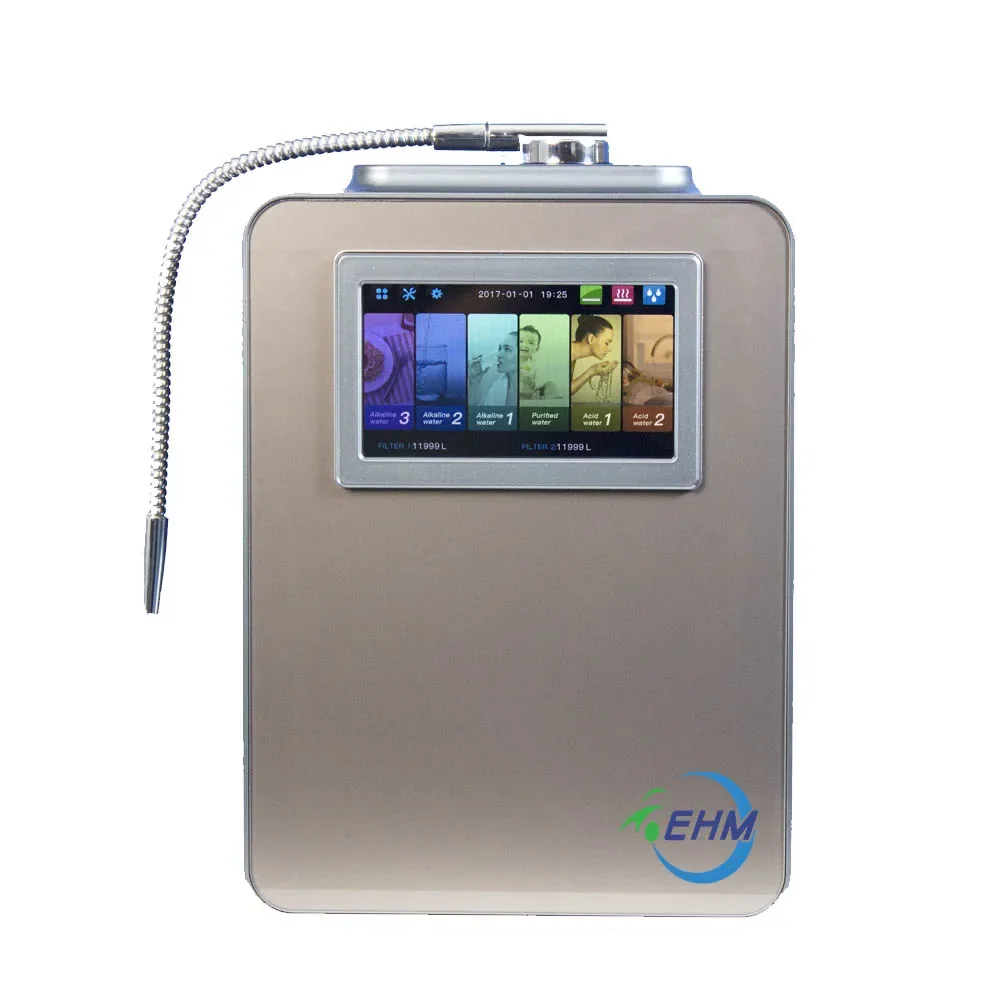
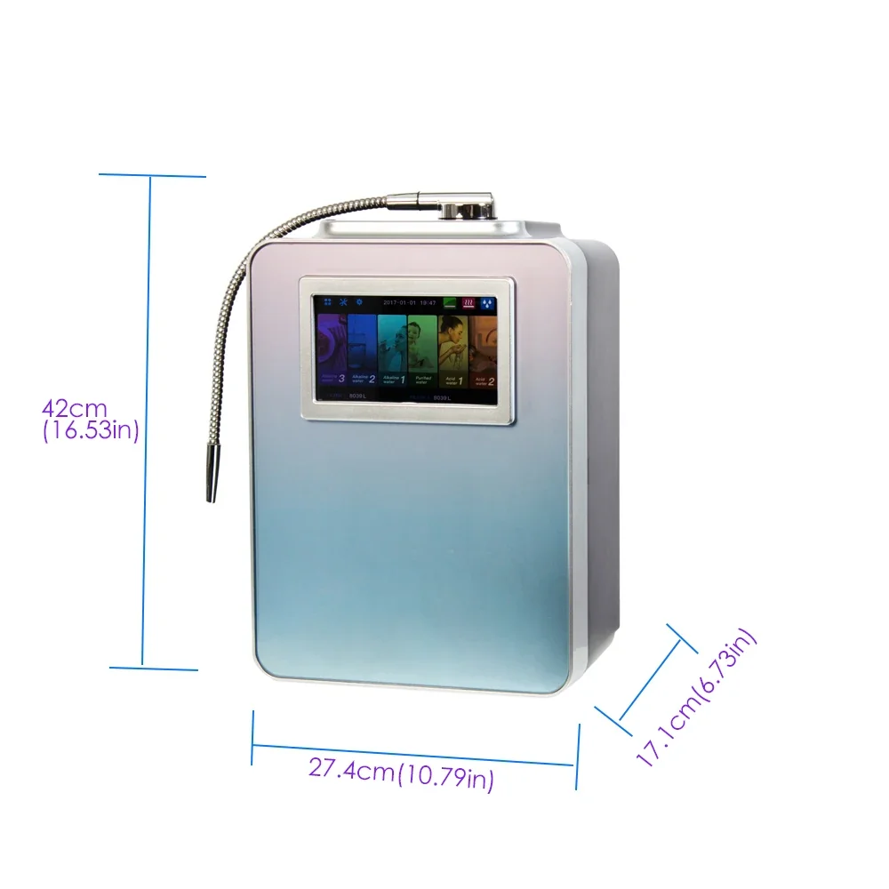
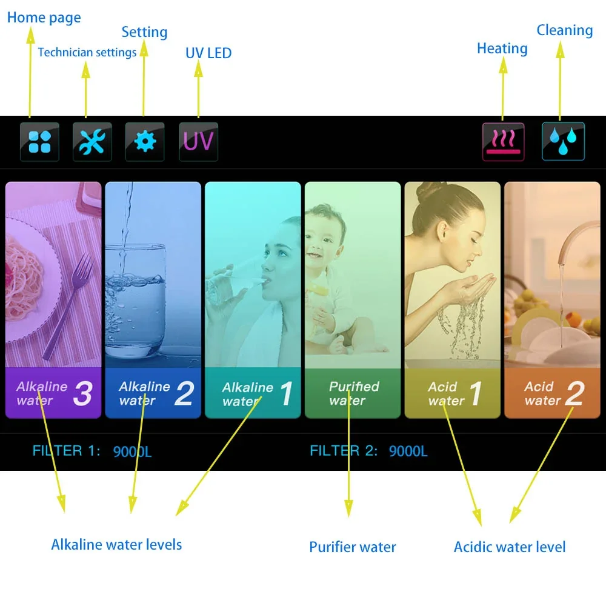
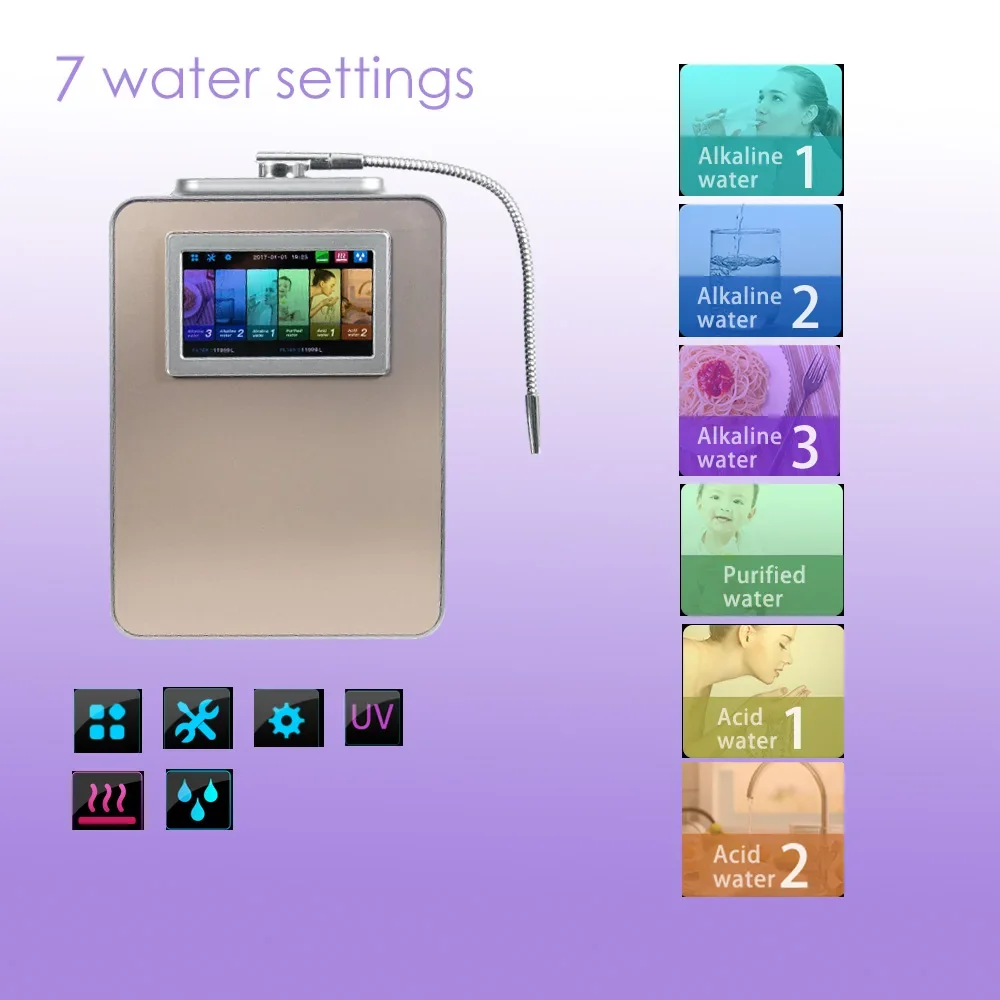
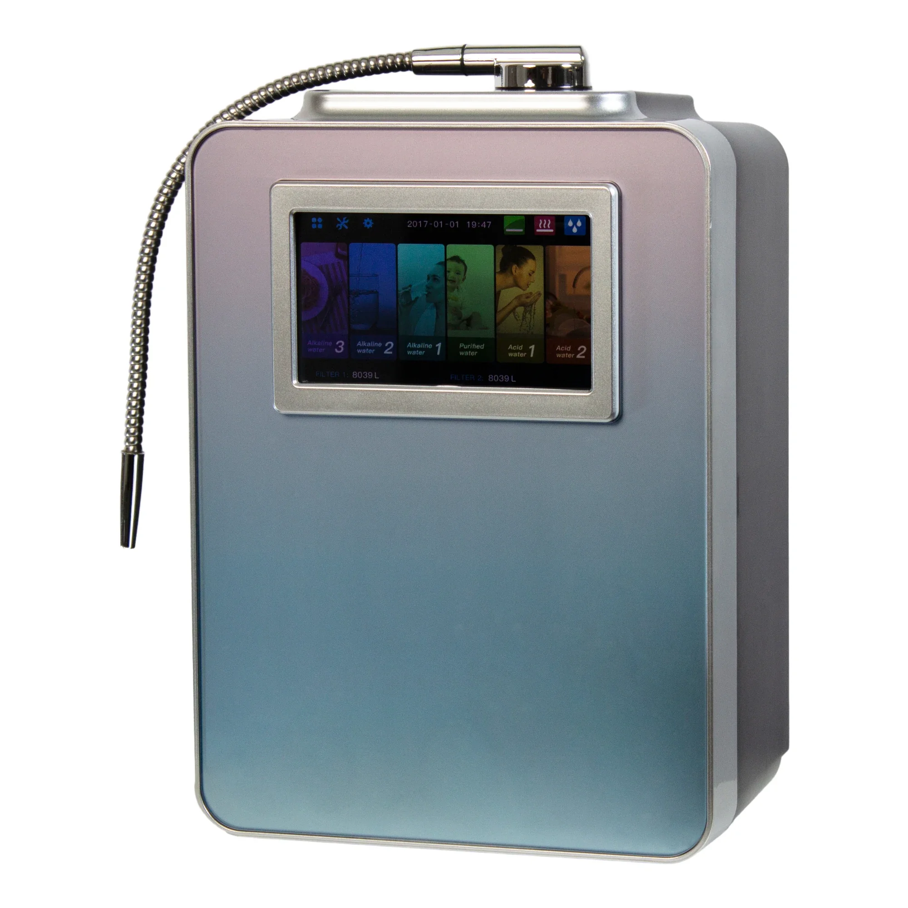

Generador y purificador de agua alcalina: hidrógeno y agua ácida, pantalla colorida de 7", pH ajustable
- Pantalla a color de 7 pulgadas: Controle fácilmente los niveles de pH en esta vibrante pantalla. Amplio rango de pH: Genere agua con un amplio espectro de 2.8 a 11.2, lo que permite ajustes personalizados según sus necesidades. El generador ionizador de agua alcalina para el hogar es más que un simple generador de agua; es un compromiso con un estilo de vida más saludable. ¡Mejore su rutina diaria con el poder del agua ionizada y experimente la diferencia!
Este generador ionizador y purificador de agua alcalina para el hogar cuenta con un diseño elegante y una impresionante variedad de funciones para mejorar su experiencia de consumo de agua. Su pantalla a color de 7 pulgadas, fácil de usar, permite navegar y monitorear fácilmente los parámetros de calidad del agua. Con su avanzada tecnología de ionización, esta máquina separa eficazmente los minerales beneficiosos de las impurezas, produciendo opciones de agua tanto alcalina como ácida.
- Pantalla colorida de 7 pulgadas: Controle fácilmente los niveles de pH, el flujo de agua y otras configuraciones esenciales con la intuitiva interfaz de pantalla táctil.
- Rango de pH: 2.8 - 11.2: Disfrute de un amplio espectro de opciones de pH, desde agua altamente ácida hasta agua fuertemente alcalina, que satisface diversas necesidades y preferencias.
- Producción de agua alcalina y ácida: La máquina genera tanto agua alcalina beneficiosa para la salud y el bienestar, como agua ácida con posibles aplicaciones de limpieza.
Este purificador generador ionizador de agua alcalina para el hogar está diseñado para ofrecer resultados de alta calidad. Aunque las especificaciones pueden variar, el dispositivo utiliza sistemas avanzados de filtración y tecnología de intercambio iónico para producir agua pura y saludable.
- Caudal de agua: Alto caudal para una purificación eficiente del agua.
- Tecnología de ionización: Proceso avanzado de electrólisis para una ionización eficaz del agua.
Este purificador y generador ionizador de agua alcalina para el hogar ofrece una variedad de beneficios potenciales para su salud y bienestar. La producción de agua alcalina suele asociarse con una mejor hidratación, mayores niveles de energía y una mejor absorción de nutrientes. El agua ácida puede ser beneficiosa para ciertas aplicaciones de limpieza.
- Hidratación mejorada: Se cree que el agua alcalina promueve una mejor hidratación al mantener el equilibrio natural del pH del cuerpo.
- Posibles beneficios para la salud: El agua alcalina puede contribuir a una mejor digestión, reducir la acidez y mejorar el bienestar general.
- Opciones de agua versátiles: La capacidad de producir agua tanto alcalina como ácida ofrece flexibilidad para diversos usos.
Usar este purificador y generador ionizador de agua alcalina para el hogar es sencillo. Simplemente conecte la unidad a una toma de agua, seleccione el nivel de pH deseado en la pantalla a color y deje que la máquina genere agua purificada. El dispositivo incluye instrucciones detalladas para un funcionamiento seguro y eficiente.